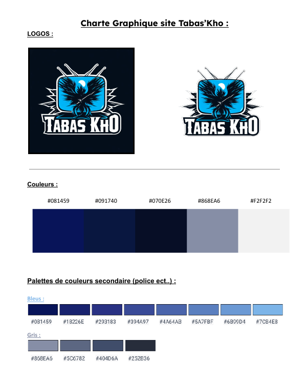

HTML pour le développement front-end du site.
 Mon CV
Mon CV
Ce projet vise à développer une plateforme de streaming vidéo personnalisée, répondant aux besoins spécifiques du client. Il comprend l'analyse des besoins, la conception de la charte graphique, la conception du site via Figma, et le codage en HTML, CSS et JavaScript. La gestion du projet est assurée via GitHub pour une collaboration efficace.

HTML pour le développement front-end du site.

CSS pour le style du site.

JavaScript pour les animations sur le site web.

GitHub pour la gestion de projet et la collaboration.
Le processus de développement du site de streaming vidéo s'est déroulé en plusieurs étapes :
Le projet de développement d'un site de streaming vidéo inspiré par la série "Black Mirror" a non seulement permis de créer une plateforme unique explorant les thèmes dystopiques de la technologie, mais il a également marqué une étape importante dans l'amélioration des compétences en développement web. En se concentrant sur l'utilisation de technologies modernes telles que HTML, CSS, JavaScript et GitHub, ce projet a offert une occasion précieuse de renforcer les compétences en programmation, en particulier en JavaScript. Cette expérience a enrichi ma compréhension des implications futures de la technologie sur notre société, tout en me donnant la chance de mettre en pratique des compétences essentielles dans le développement web.
 Acceder au site
Acceder au site